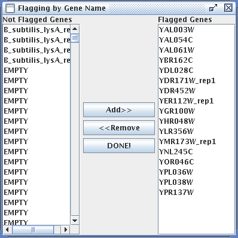

(5) Locate Spots
Under the Build Expression File, select Addressing/Gridding option.
There are several distinct steps in Addressing and Gridding, which we will walk through one by one in the following paragraphs (a) - (j).
(a) Decide whether you want to create a new grid or load a saved grid.
Unless you have done this before, you will need to create a new grid. If you have a previously-created grid that is appropriate for this image, you can simply load it by choosing "Load Saved Grid" from the Addressing/Gridding submenu, or by pressing Control+W, and proceed directly to Step 6, segmentation. To create a new grid, choose "Create/Edit Grid" from the Addressing/Gridding submenu, shown above, or press Control+A. |
When you create a new grid, you will get a warning window that is normal and intentional. The warning is a reminder that you MUST understand how your spots are arranged on your microarray. For more information about this step, consult
http://gcat.davidson.edu/GCAT/workshop2/addressing_MT.html
Do not proceed any further if you do not understand the organization of your microarray.
Failure to perform Addressing and Gridding correctly will result in features being incorrectly identified.
You should see two windows. One will show your merged tiff files and the other will permit you to address the tiff file. The smaller (moveable) window will ask you information about how your microarray is organized; this is called addressing.
(b) Answer the four questions in the Grid Setup window.
| First, enter the total number of grids on the tiff file. Answering the remaining three questions is the easiest step to make a disastrous mistake. Answer the three questions based on the way you are seeing your microarray at this time. Here is an example to illustrate the point. Suppose the image has been rotated 90 degrees clockwise compared to the way you normally think about your chip, but your gene list is not altered to account for the rotation. Then the way you are seeing your tiff file will not match what you think of as your microarray organization. |
The following two images show the layout of the microarray before and after rotation. Before rotation, the spots would be described as being numbered from top to bottom and from left to right, with the second spot horizontal of the first spot (just like you would read a book). These are the default options. However, it is important that you keep track of the spots if the chip is rotated.
After rotation, the spots are numbered top to bottom, right to left, and the second spot is now vertical from (below) the first spot. Study the before and after rotation images, to understand how the spots have moved and why the new orientation resulted in the addressing provided in the figure above. Then study all the other options for numbering spots in the table below.
If you make a mistake, you can change your answers to these addressing problems by selecting "Grid properties..." under the file menu of the gridding window. |
(c) Begin gridding.
The goal of gridding is to tell MAGIC where the spots within each grid are located. This feature is one of the best innovations in MAGIC Tool. Before you begin, you may want to adjust the contrast to help illuminate faint spots. To do this, slide the indicator that is currently pointing to 100% contrast near the top of this window. Adjusting contrast does NOT affect the raw data; it only allows you to see spots better for this step.
The number one tab should be selected as the default when you begin gridding. The tab numbers on the microarray correspond to the grid numbers. Selecting tab #1 indicates you are working with grid #1 (based on the gene list order). You may begin with a different grid if you wish, but be sure to keep straight where each grid is on the microarray. Again, if you do not follow this procedure of matching grid numbers with tab numbers, you will cause the features to be incorrectly identified. Grid #1 is the grid that contains spot #1, corresponding to gene #1 in the gene list.
(d) Center current grid in gridding window.
Scroll and zoom the image until you can see the first grid as defined by the gene list. To zoom in, click on the "Zoom In" button and then click on the grid where you want the zoom to center. Remember that spots and genes do not change their numbers with image rotation. In the example above where the image is rotated 90 degrees clockwise, the first grid would be the grid in the top right corner.
(e) Enter grid location information using "3-click" mouse method.
a. Click on the button that says "Set Top Left Spot" and then click on the center of the top left spot of the grid. b. Click on the button that says "Set Top Right Spot" and then click on the center of the top right spot. c. Click on the button that says "Set Bottom Row" and then click on the center of any spot in the bottom row. Choose a big round spot to make this step easier. d. Enter the number of rows and columns. This is to be answered based on the way you are currently viewing the tiff file. In this example, there are 24 rows and 12 columns. e. Click the "Update" button. At this time, you should see all the spots in the first grid surrounded by boxes as shown in the figure. At any time in the gridding process, you can mouse over a spot and identify its location (x and y coordinates in pixels, row, column and spot number) as well as its identity from the gene list. This information is displayed in the bottom left corner and is especially useful for navigating during segmentation. |
(f) Adjust the grid to center spots.
At this time, see if the spots look centered in the boxes. If not, then adjust the position of the boxes either by clicking on the appropriate button and then the correct spot, by manually typing in numbers to adjust the boxes, or by adjusting the grid with the mouse. If you click anywhere inside the grid, you can drag the entire grid to a new location. The grid can be resized from a corner by clicking on one of the blue boxes and dragging the mouse. As you drag, the new size and position of the grid will be displayed. Finally, if click one of the rotation buttons, the entire grid will rotate around its center, allowing you to adjust for slightly tilted grids on your images. If you decide to manually tune the grid by changing the values in the boxes, note that the position of the mouse is displayed in the bottom left corner of the window so you can determine if the numbers should be bigger or smaller to shift the boxes in the correct direction. Gridding takes a bit of practice, but it is MUCH easier than most other methods for gridding.
(g) Define the next grid.
If you only have one grid, skip to step (i). If you have more than one grid, continue. Once the first grid is properly gridded (surrounded with boxes with the spots in the centers), it is time to repeat this process for grid #2. Be sure you know whether grid #2 is left, right, above or below grid #1.
Press and hold the Control (Ctrl) key on the keyboard, then click on the middle of the top left spot of grid #2. The same grid, translated to the location specified by your mouse click, will appear as grid #2, and all the numbers in the boxes on the left will be filled in automatically. If you release the Control key, you can adjust the grid just as you did in step f. Repeat this process for all grids.
(h) Continue gridding.
Continue step (g) for each remaining grid on the microarray, so that all the grids on the microarray are boxed with the spots in the center of the boxes. At any time, you can change your answers to the four addressing problems by selecting "Grid properties..." under the file menu of the gridding window.
You may stop at any time and save your work so far, using the "Save Current Grid As..." under the file menu of the gridding window. Next time you begin Addressing/Gridding, you can simply open this saved grid file.
You can also save a snapshot of the combined tiff images at any time before or during the gridding process. You can save the image as tiff, jpg or gif. Tiff format works on all drawing and word processing programs so it is a universal format. Jpeg is good for images such as this that have many shades, like a photograph. Gif is the simplest format but may lose some of the subtlety of your original file. This saved merged image is useful if you want to take a picture of the overall grid and can be used for publishing or teaching.
(i) Complete the gridding process.
When you have finished gridding all your grids, click on the "Done!" button. If you have not already saved your grid, you will be prompted to do so before moving on to the next step. A grid file should be saved in your project folder and automatically given a suffix of ".grid" (so you do not need to type .grid yourself).
If the number of genes in your gene list and the number of spots you gridded do not match, you will get an error message. You must have exactly one grid square for each line (gene or gene replicate) in the gene list. If not, you probably will make an error identifying the spots later so you are required to fix this problem now. If your gene list and the number of gridded spots match, then you will be informed of the total number of spots and allowed to save the grid file for further use.
(j) Flag problematic spots (optional)
If there are spots on your grid that you do not wish to be used in your data analysis, you can choose to exclude the data at this stage, before the creation of the expression file. To do this, choose "Spot Flagging" from the Addressing/Gridding submenu, or press Control+F.
| Just as in the gridding window, you can zoom in and out, and fit the image to the screen. Also like the gridding window, when you hover the mouse pointer over a spot, the status bar at the bottom of the window will display information about the gene. If you see a spot that you do not want included in your calculations, click on it. A blue "X" will appear on top of the spot marking it as "flagged" to be ignored by segmentation. | |
| To see what genes have been flagged, or to choose genes to be flagged or not be flagged by their gene name, choose "Flagging by Gene Name" from the Flagging menu. In the dialog that appears, the unflagged genes (the genes that will be used) are on the left, and the flagged genes appear on the right. To flag a gene, click its entry in the list on the left, then click "Add >>." To unflag a gene, click its entry in the list on the right, then click "<< Remove." You can select multiple items on the list by pressing and holding the Control key, then clicking on each item, or, to select a range of items, click the first, press and hold the Shift key, then click the last. Once you press the Add or Remove button, the changes become visible on the image behind the Flagging by Gene Name window. Genes with names "empty," "missing," "none," or "blank" are automatically excluded from the expression file, so they need not be flagged by name. When you're finished flagging by gene name, click "DONE!" |  |
From the main Flagging window, you can also choose to save or load flag files. These files have the extension ".flag" and are stored in the "flags" subfolder of the project folder. The saving process works like the grid file saving described in paragraphs (h) and (i) above, but you are not automatically prompted to save a flag file. To load a flag file, open the Spot Flagging window, then choose "Load Saved Flags..." from the File menu. From that window, you can choose the flag file to load. Note that the number of grids and number of spots per grid must match the current grid to be able to load a flag file.